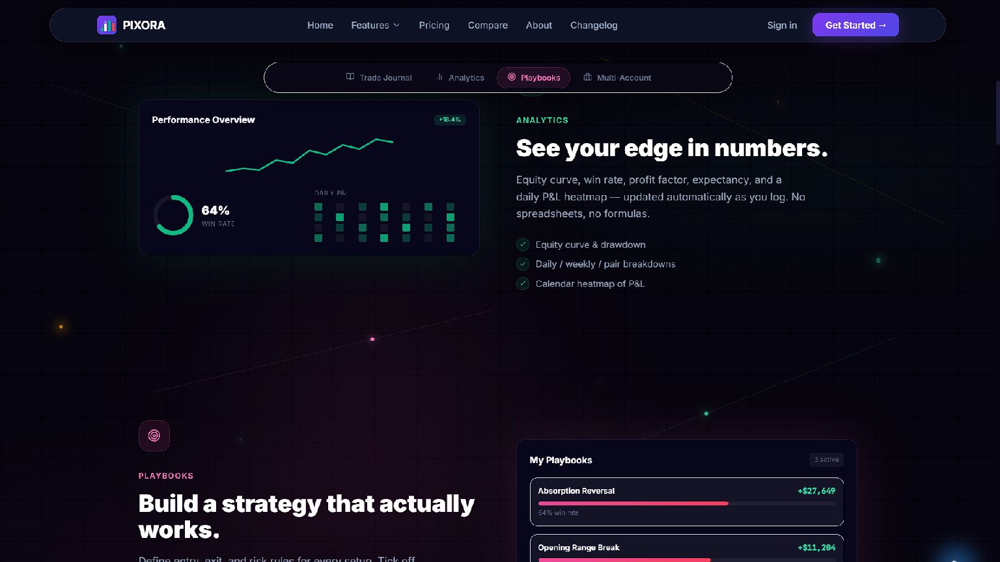
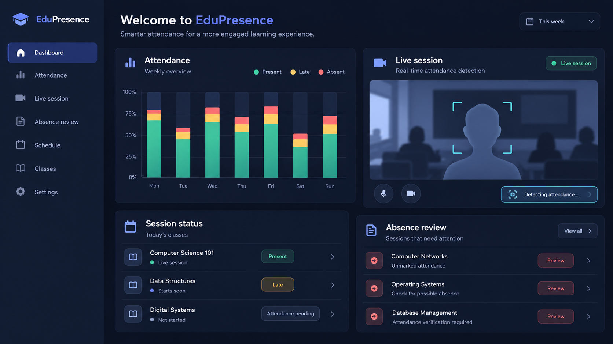
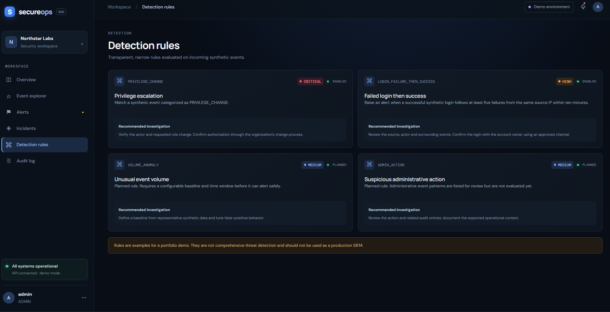
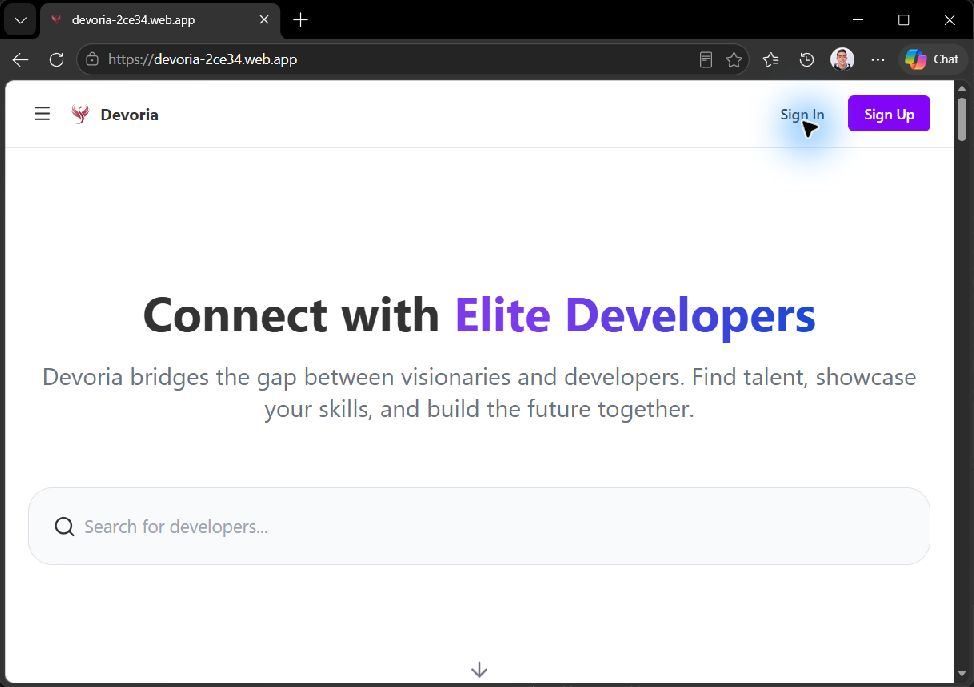

Live SaaS · Trading toolsPROJECT 01
PIXORA — Trading Journal SaaS
A subscription journal for logging trades, studying performance, tracking discipline, importing history, and replaying markets.
Full Stack Developer passionate about building modern, fast, and reliable digital experiences. I create clean, user-focused interfaces and develop solid, scalable logic behind them. Based in Morocco, constantly learning, improving, and crafting better solutions every day.
View My Work Contact MeExplore the goal, architecture, trade-offs, and visual details behind each build.

Live SaaS · Trading toolsA subscription journal for logging trades, studying performance, tracking discipline, importing history, and replaying markets.

Final Year Project · EST MeknèsA facial-recognition attendance platform with student, professor, and administrator workflows.

Defensive security · In progressA security operations dashboard connecting synthetic event detections to alert triage, incident handling, and audit review.

Live platform · CommunityA platform for discovering developers, exploring work, and connecting around project needs.
A task portal with filtering, priorities, authentication, and responsive screens.
A browser-based CRUD app for profiles, search, and LocalStorage persistence.
A responsive portfolio for presenting projects, skills, and experience.
A modular C program for accounts, deposits, withdrawals, and transaction tracking.
Java OOP applications for zoo, hotel, and cinema management workflows.
I’m a full-stack developer who enjoys building clean, functional, and user-friendly digital experiences. I focus on writing maintainable code, understanding how things work behind the scenes, and constantly improving my problem-solving skills.
I work with modern web technologies and love turning ideas into real, working applications—from frontend interfaces to backend logic and data handling. Learning, improving, and shipping better projects is what motivates me every day.
Tech highlights: JavaScript (ES Modules), React, Bootstrap, PHP, MySQL, HTML/CSS, Git/GitHub, UI/UX fundamentals.
A practical toolkit built through my DUT coursework, internships, and full-stack projects.